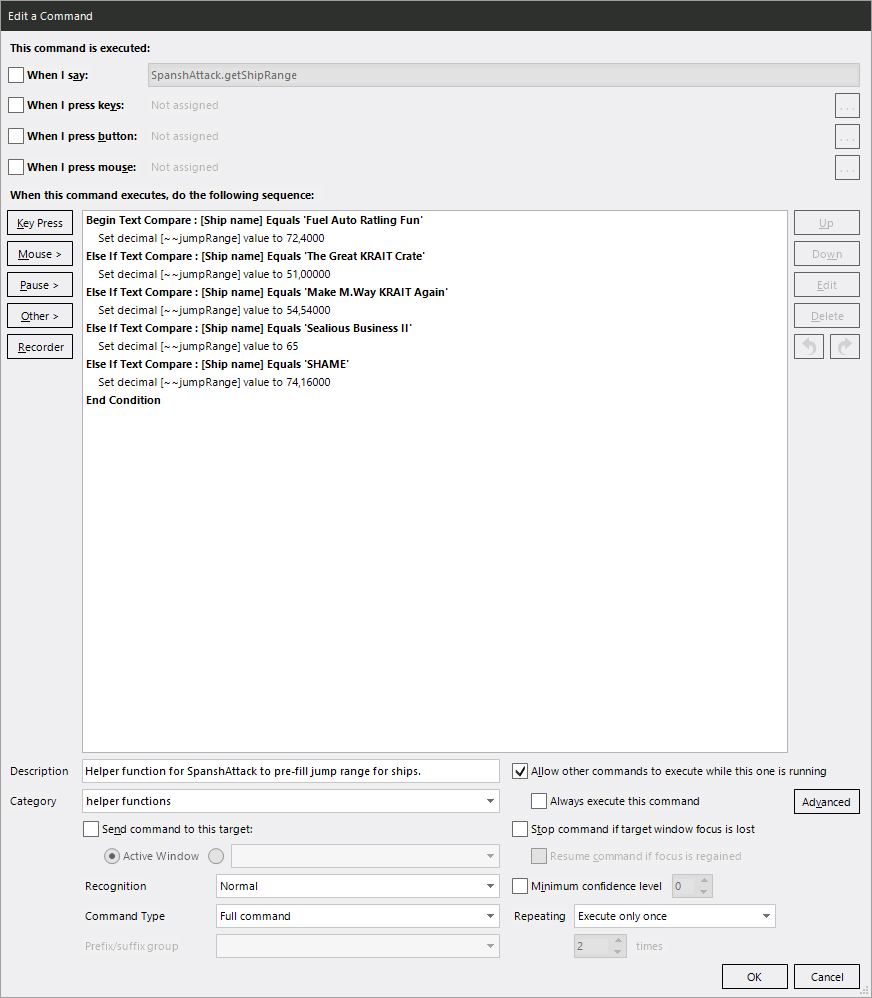

SpanshAttack¶
Supplying Your Ship’s Range¶
The ED-NeutronRouter plugin is technically supposed to read the current jump range from EDDI; sadly EDDI is storing the maximum distance for your ship instead of the current / full on fuel one. The “default to laden range” option works reasonably well, but it has a few quirks. It always assumes full cargo, and it will take your current fuel levels for range calculations, disregrading the range loss if you fill your tank.
For any ships that you regularly use for neutron jumping, e.g. long range Fuel Rat ships, I recommend telling SpanshAttack about the range they are supposed to have with full fuel and your preferred amount of cargo/limpets.
In order to do that, copy the SpanshAttack.getShipRange command from
SpanshAttack or the example profile to your custom profile and add your ships.
Any ship listed in there will automatically have its jump range used instead of
EDDI’s reported laden range or VoiceAttack prompting you to manually supply it.

You can override a saved range for your ship by using the
plot neutron [course;route;trip] with custom range command.
Settings¶
Toggles:
auto jump after scooping: Automatically jump out when fuel scooping is complete. Default: true.auto plot: Automatically plot to the next waypoint after supercharging. Default: true.clear neutron route on shutdown: Clear an active neutron route when the game is shut down. Default: true.copy neutron waypoints to clipboard: Copy each neutron waypoint into the Windows clipboard. Default: false.default to laden range: Default to the current ship’s laden range as reported by EDDI instead of prompting for input. Default: false.time neutron route: Keep track of how long a neutron route takes you to complete. Default: false.waypoint announcements: Announce each waypoint by name. Default: true.
Other Settings:
announce jumps left: Estimated jumps left to announce when reached. NEEDS to have leading and trailing “;”. Default: ";1;3;5;10;15;20;30;50;75;100;"